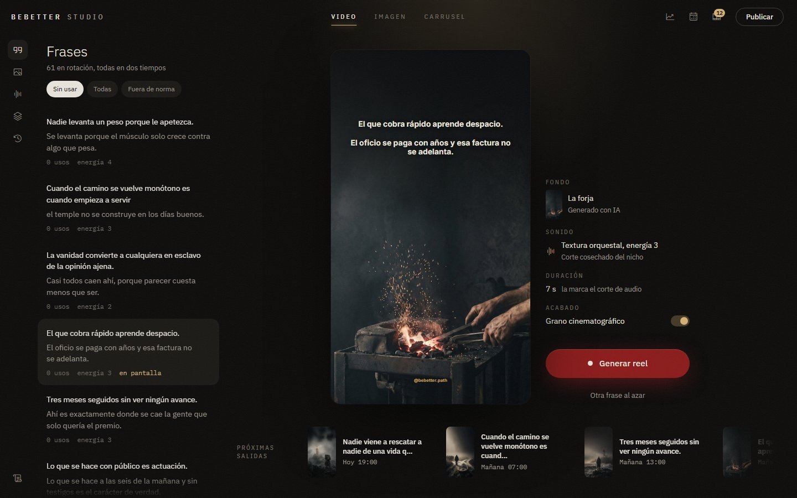
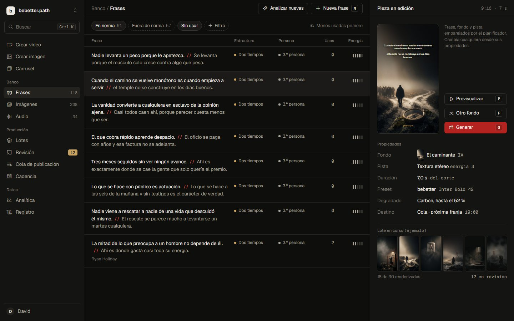
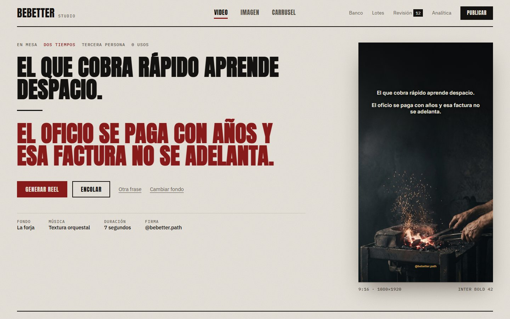
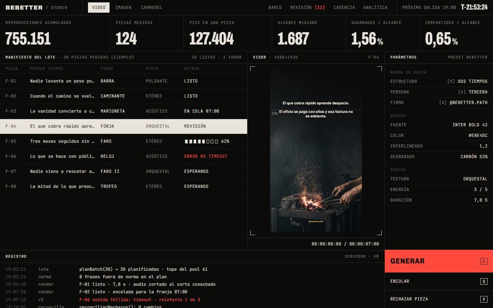

Cuatro direcciones
Elegida el 2026-10-05: la mezcla «Sala de montaje» (atmósfera de 1, estructura de 2 y el giro de 3 en Revisión). Abrir la vista de referencia. El sistema está en DESIGN.md.
Rediseño de beBetterStudio. La misma pantalla (el editor de reels) con el mismo contenido real, interpretada de cuatro formas. Abre cada una: todas responden al clic, y la frase entra en dos tiempos como en el render.
- Para quién
- Para el uso diario y como escaparate de Galactic AIMA
- Marca
- bebetter al 100 %
- Sensación
- Cine con disciplina
- Referencias
- Villeneuve, Nolan, A24 · Apple, Linear, Notion
Qué cambia en la paleta (las cuatro lo corrigen)
El rojo sangre no se lee sobre carbón: 2,1:1. Por eso la app acabó usando #FF3B3B, un rojo neón que está fuera de marca. Las propuestas lo resuelven de dos maneras: usarlo solo como relleno con hueso encima (7,3:1), o derivar del mismo tono un rojo con luz (Lacre #D9534A, Señal #FF4A3D).
Los carbones actuales son grises puros (croma 0) y el hueso es cálido (tono 85°), así que no casan. Las cuatro paletas tiñen los carbones con el tono del hueso. El dorado deja de ser «botón premium» y vuelve a su papel de marca: luz y metadatos. Todos los pares de texto pasan WCAG AA, comprobados uno por uno.

Dirección 1 · la más segura
Sala de proyección
El reel es la pantalla y la app es la sala a oscuras. Todo lo demás se retira.
- Referencias
- Villeneuve: la luz cálida que entra en la oscuridad. Apple: la interfaz desaparece para que hable el producto. Runway: la imagen es la interfaz.
- Paleta
salahumohueso 15,5hueso-2 6,7luz 9,6sangre*
- Tipografía
- IBM Plex Sans (el cuerpo de tu marca) más Plex Condensed en versalitas espaciadas para las etiquetas. La frase, en Inter Bold, igual que el render.
- Movimiento
- Lento y de luz: la sala se enciende al abrir (0,9 s), la frase llega en dos tiempos con su respiro y, al generar, la sala baja la luz y solo queda la pantalla.
Por qué encaja: es la traducción más directa de «cine» y la más vistosa en una captura para Galactic AIMA. Mantiene tu flujo de tres zonas.
Por qué no: sacrifica densidad. Con 30 piezas de un lote, el aire se vuelve scroll.

Dirección 2 · la más disciplinada
Mesa de montaje
El banco es material con propiedades. La norma de marca se ve como columnas, no hay que creérsela.
- Referencias
- Linear: escalera de superficies, un solo acento y teclado (j/k, G para generar). Notion: las propiedades como datos legibles. DaVinci: el material ordenado y el visor a un lado.
- Paleta
lienzos2tinta 15,8tinta-2 7,7lacre 4,9oro 8,2
- Tipografía
- Geist y Geist Mono para cifras y atajos. Neutra y precisa, sin personalidad propia: la personalidad la pone el contenido.
- Movimiento
- Casi invisible: 120 ms, sin adornos. La selección es instantánea y el visor se actualiza con un fundido de 160 ms. La velocidad es la estética.
Por qué encaja: es la que mejor escala con 118 frases, 238 imágenes y lotes de 30. El «//» en lacre enseña el corte entre tiempos en cada fila.
Por qué no: es la menos cinematográfica. Si se pasa de sobria, puede parecer «otra app tipo Linear».

Dirección 3 · la más de autor
Cartel
Cada frase es un cartel de película. El giro, en rojo sangre.
- Referencias
- A24: una idea por cartel, tipografía enorme y aire. Nolan: títulos en mayúsculas condensadas con peso. Edición impresa: filetes, créditos y la cartelera.
- Paleta
papelpapel-2tinta 14,7tinta-2 5,7sangre 7,3oro osc. 5,0
- Tipografía
- Anton, la display de tu marca, que hoy la app no usa en ningún sitio. Con IBM Plex Sans y Plex Mono para los créditos.
- Movimiento
- Tipográfico, como unos títulos de crédito: el primer tiempo sube desde una máscara, se traza el filete (el respiro) y entra el giro. El cartel se posa detrás.
Por qué encaja: es la única que pone tu estructura de dos tiempos en el centro del diseño, y el rojo sangre por fin se lee (sobre papel da 7,3:1). Es la más memorable como escaparate.
Por qué no: es clara, y tus piezas son oscuras. Trabajar de noche en ella cansa más, y en las tareas densas (lotes, analítica) Anton grande no sirve.

Dirección 4 · la más radical
Bitácora
Un centro de control. La app ya opera sola; esta dirección lo enseña en vez de esconderlo.
- Referencias
- Nolan: las salas de control de Interstellar. SpaceX: negro, mayúsculas, ingeniería. Telemetría brutalista: rejilla visible, radio cero y monoespaciada para todo dato.
- Paleta
fondorejillafósforo 15,5fósforo-2 5,7señal 5,9
- Tipografía
- Archivo condensada (ancho 62) para las cifras grandes y JetBrains Mono para todo lo demás.
- Movimiento
- Mecánico, por pasos y sin curvas: los contadores suben como un instrumento, la cuenta atrás hasta la próxima franja corre de verdad, el registro se escribe línea a línea y al generar un barrido rojo recorre el visor.
Por qué encaja: enseña tus números reales (755.151 reproducciones, pico de 127.404) y el sistema que hay detrás. Para vender el trabajo técnico de Galactic AIMA es la más elocuente.
Por qué no: se aleja del «cine». Es más Nolan ingeniero que Villeneuve poeta, y las mayúsculas mono cansan en sesiones largas.
Todo el contenido es real: frases en norma del banco, fondos generados por IA del banco y métricas del snapshot del 2026-09-12. Lo que es de ejemplo (la cola, el lote en curso, el registro) va marcado así en cada página. * Rojo sangre solo como relleno, nunca como texto sobre carbón. Las cifras al lado de cada color son su contraste WCAG sobre el fondo de esa dirección.